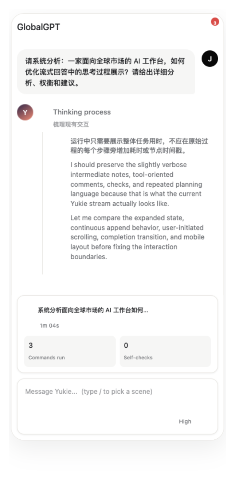
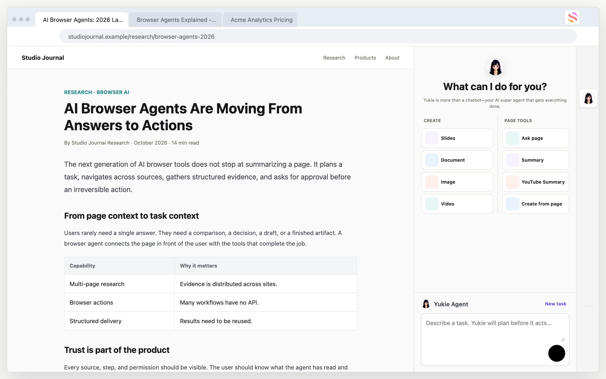
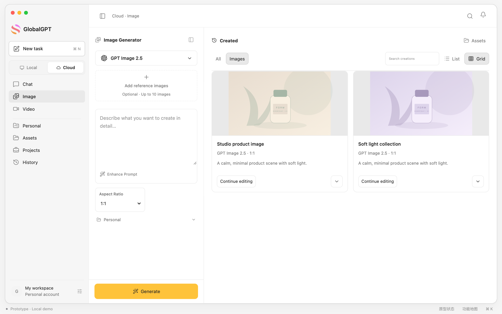
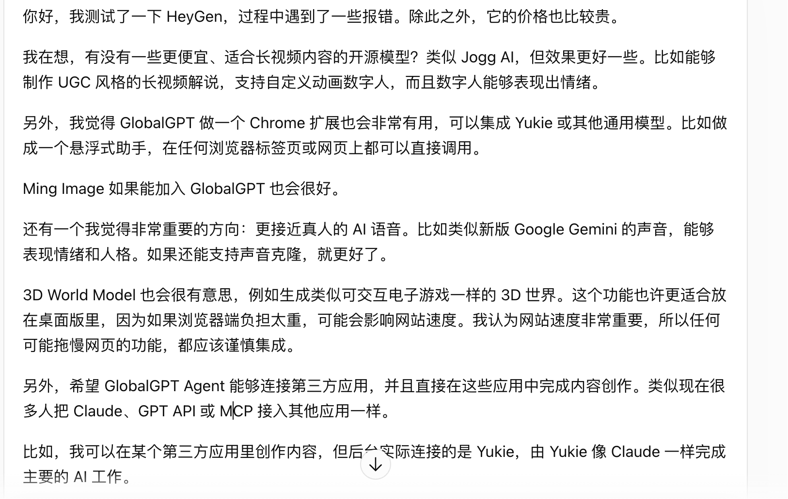
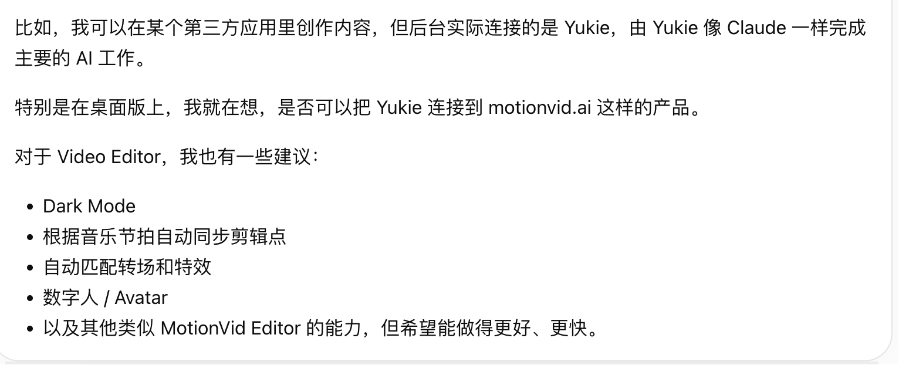
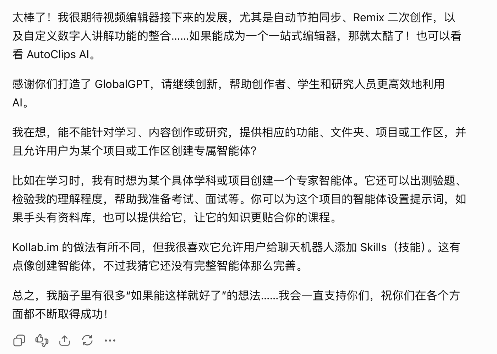
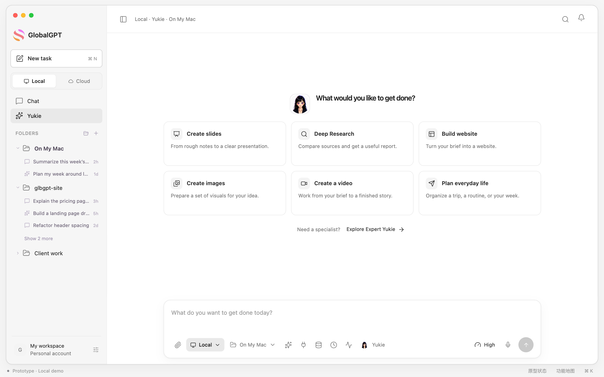
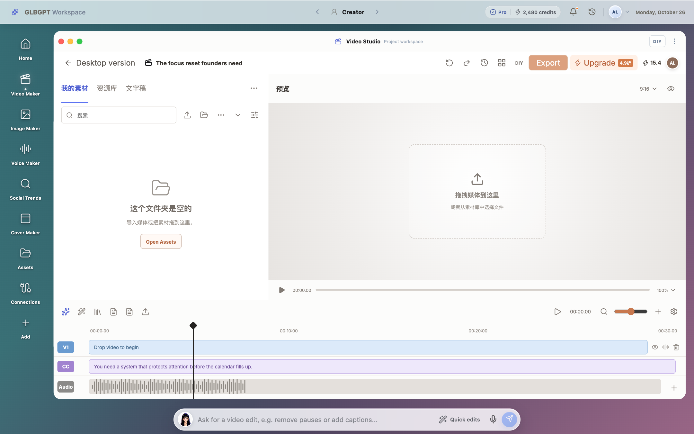
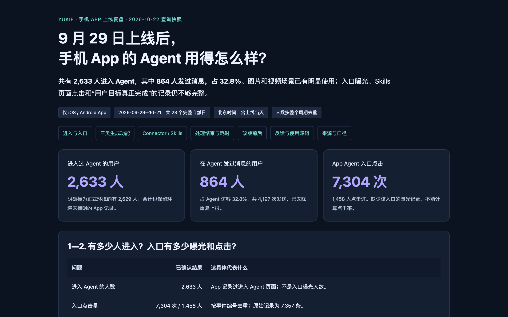

打开 Demo移动端 Yukie Agent
补齐移动端 Agent 入口，设计首页场景、任务状态、图片/视频生成、Skills 与 Playbooks 的完整交互。
我负责了什么
从信息架构、功能排布到交互状态和研发跟进，独立完成方案并推动上线。
@Jazzy179
AI 产品经理实习生 · 对外经济贸易大学精算学本科生
我相信好产品应该让用户真正完成任务，而不是只看到模型在工作。
目前在做 Agent、多模态创作和产品数据。精算训练让我习惯核对口径，创业公司经历让我习惯从模糊需求一路跟到上线。
这里放交互原型和真实操作片段。你可以直接点进去看我如何组织 Agent、任务状态和多模态创作。

打开 Demo补齐移动端 Agent 入口，设计首页场景、任务状态、图片/视频生成、Skills 与 Playbooks 的完整交互。
从信息架构、功能排布到交互状态和研发跟进，独立完成方案并推动上线。

打开 Demo已于 2026.10.23 进入生产环境，让用户从当前网页直接发起总结、图片和视频任务，再回到 GlobalGPT 继续处理。
页面上下文提示、授权状态、生成中的状态反馈和回到主站的交付路径。

打开 Demo从零设计客户端，完成 All-in-one Chatbot、Yukie Agent、图片/视频生成和 Task 模式切换。
第一版建立客户端骨架，第二版加入 Agent 与多模态能力，并继续优化 Connector 和任务路径。
与 CEO 共同通过邮件向用户提问，负责反馈整理与需求归纳。以下按匿名邮件文字和反馈截图整理。
用户以一份 24 镜头的提案视频为例，长期希望完成 60 分钟动画电影。目前手动维护角色设定、镜头状态和修改记录，是最耗时的环节。
“Yukie 负责的是所有繁琐的记录、管理和执行工作。”用户邮件 · 按提供的中文内容摘录
反馈涉及脚本、选题、剪辑、发布准备等多个环节：用户期待把这些工作串起来，并希望在当前网页就能调用 Yukie。
“如果能成为一个一站式编辑器，那就太酷了！”用户反馈截图 · 按提供的中文内容摘录
以上功能期待用于提出后续验证方向；目前展示的是用户需求与整理思路。



最近在推进移动端与 Mac 客户端。我的关注点不是把功能全部塞进去，而是让用户先知道“在哪里工作”，再知道“可以完成什么”。

一次 Agent 任务可能正常结束，但文件打不开、外部动作没发生，用户依然没有完成目标。做复盘时，我会把系统状态、交付状态和用户结果拆开看。
数据不是为了证明产品很好，而是为了更准确地决定下一步做什么。
这条产品线让我第一次完整负责需求、UI、Codex 辅助开发、数据面板和迭代维护，也让我更具体地理解设计可实现性。

从移动端首页、场景化入口到图片/视频生成、Skills 和 Playbooks，完整设计 Agent 使用路径并推动上线。
体验移动端 Demo从网页上下文触发总结、图片和视频任务，设计授权、生成状态和回到主站的交付路径，并于 10 月 23 日进入生产环境。
体验 Chrome Demo
用 PostHog 与业务数据库定位开始使用、保存、授权和处理状态，不混淆系统结束与用户成功。
在 PDF 中查看完整案例负责 Agent、多模态创作、Chrome 插件、数据复盘和前端验证，跟进需求到上线后的持续迭代。
参与电子行业与公司研究，训练信息搜集、证据核对和结构化表达能力。
GPA 3.82 / 4.00。课程覆盖线性代数、时间序列、随机过程与统计分析。
Python 数据处理、金融数据清洗、因子研究和回测方法。目标是完成一份可以公开展示的量化研究项目。